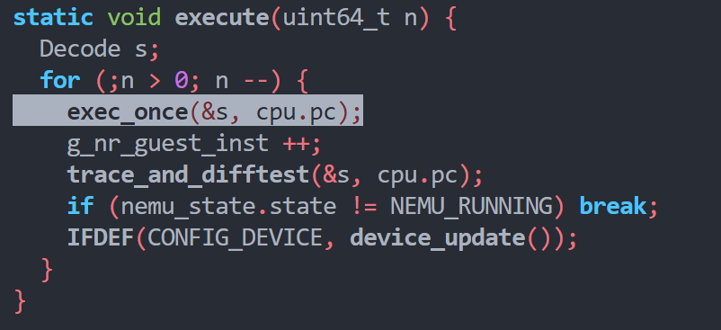
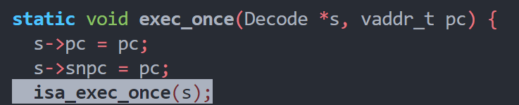
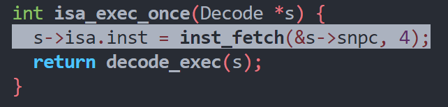
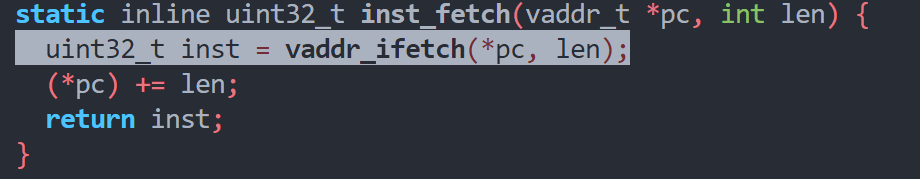
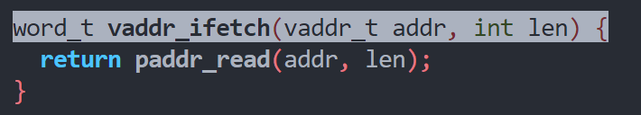
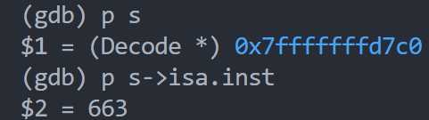
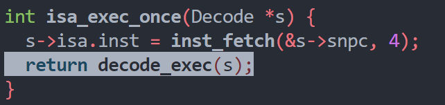
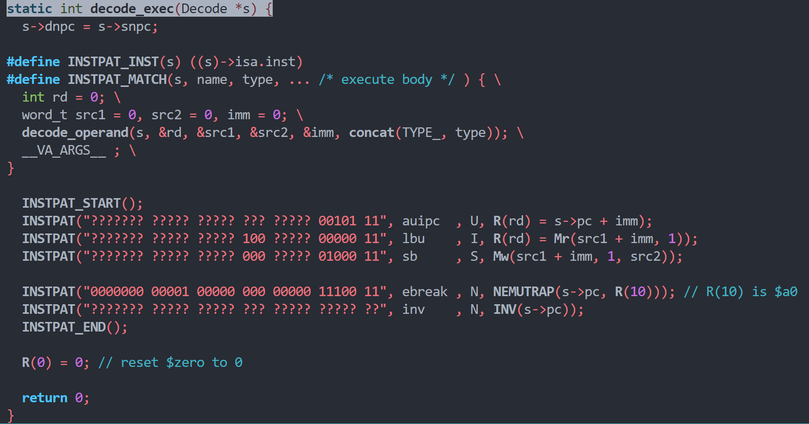
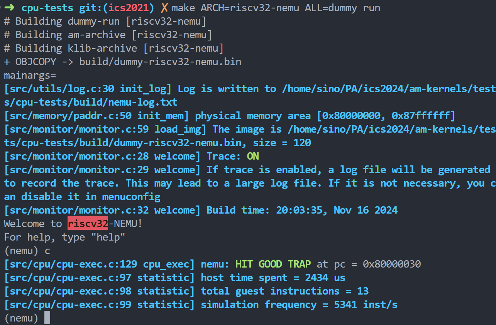

本人仅为兴趣使然记录过程，请尊重手册上的学术诚信条目。
指令执行过程
execute()模拟了cpu的运行过程

传入decode和此时的pc，由于不同isa执行过程可能不同，所以单独抽象出一个函数isa_exec_once()以屏蔽isa之间的差异

取出的指令存入结构体s

进入取指阶段
此时操作的是snpc，直接将映射在虚拟地址中的指令取出，并将snpc指向下一条指令的内存地址
由于riscv32为定长指令，所以长度固定位4字节

映射的虚拟地址实际还是会访问真实的物理地址

之后就将取出的指令返回，取出的指令将会存储在Decode结构体中。

进入译码阶段，将s传入


将snpc赋值给dnpc，如果后续没有跳转指令，则snpc与dnpc相等，否则需要修改dnpc
之后开始进行模式匹配，可使用宏展开清晰看出执行过程
利用makefile进行宏展开
preprocess: $(SRCS)
@echo "Running preprocessor for source files..."
@mkdir -p $(BUILD_DIR)/preprocessed
@for src in $^; do \
echo "+ Preprocessing $$src"; \
$(CC) $(CFLAGS) -E $$src -o $(BUILD_DIR)/preprocessed/$$(basename $$src).i; \
echo "Preprocessed output saved to $(BUILD_DIR)/preprocessed/$$(basename $$src).i"; \
done
Makefile 中的换行符会终止当前命令，因此必须用 \ 进行换行转义。
补全指令
宏解析
先来看比较重要的几个宏
#define BITMASK(bits) ((1ull << (bits)) - 1)
#define BITS(x, hi, lo) (((x) >> (lo)) & BITMASK((hi) - (lo) + 1)) // similar to x[hi:lo] in verilog
#define SEXT(x, len) ({ struct { int64_t n : len; } __x = { .n = x }; (uint64_t)__x.n; })
BITMASK将数值为1的无符号长整形左移bits位再减1，即可生成一个bits+1位为0，其余全为1的掩码
BITS将数x右移lo位，再与生成的掩码进行与运算
比如0b11001提取x[3:1]即为0b100
运算过程BITS(0b11001, 3, 1) => (0b11001 >> 1 & BITMASK(3)) => (0b01100 & 0b0111) => 0b100
SEXT中使用了GCC块表达式({...})会将最后一条语句作为该表达式的值，其主要的作用为将数x进行符号扩展，使得能够处理操作数或立即数为有符号数的情况
实现指令
参考资料
以第一个dummy.c程序为例，阅读汇编代码发现有这几个指令是代码中没有实现的，li addi jal ret sw mv
查阅资料得知，li是伪指令，对于 12 位以内的立即数，li 会被转换为 addi（加法立即数）指令，而对于更大的立即数，汇编器会使用多个指令来加载这个立即数，通常会使用 lui和 addi 的组合，所以只需要实现addi和lui即可
INSTPAT("??????? ????? ????? 000 ????? 00100 11", addi , I, R(rd) = src1 + imm);
INSTPAT("??????? ????? ????? ??? ????? 01101 11", lui , U, R(rd) = imm);
jal为跳转指令，需要使用到dnpc。在进行译码之前，snpc 和dnpc相同都指向了下一条指令的内存地址，所以根据jal的指令描述rd = PC+4; PC += imm即可写出该指令匹配模式
INSTPAT("??????? ????? ????? ??? ????? 11011 11", jal , J, R(rd) = s->snpc; s->dnpc = s->pc + imm);
同时根据J型指令的格式，可以写出J型指令的立即数表示
#define immJ() do { \
*imm = (SEXT(BITS(i, 31, 31), 1) << 20) | \
(BITS(i, 30, 21) << 1) | \
(BITS(i, 20, 20) << 11) | \
(BITS(i, 19, 12) << 12); \
} while(0)
ret 是对指令 jalr x0, ra, 0 的一种伪指令表示，所以需要实现jalr
INSTPAT("??????? ????? ????? 000 ????? 11001 11", jalr , I, R(rd) = s->snpc; s->dnpc = src1 + imm);
sw是存储字指令，将寄存器 rs2 中的字（4字节）存储到地址 rs1 + imm。M[rs1+imm][0:31] = rs2[0:31]
INSTPAT("??????? ????? ????? 010 ????? 01000 11", sw , S, Mw(src1 + imm, 4, src2));
mv也是一个伪指令，mv rd, rs 的作用是：将寄存器 rs 的值复制到寄存器 rd 中，等效于addi rd, rs, 0
补全上述指令后即可通过dummy.c测试

其他测试大同小异，可自行实现
PA 2-1 结束